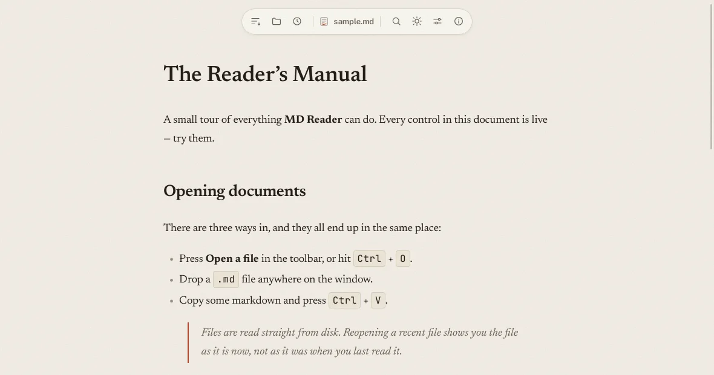
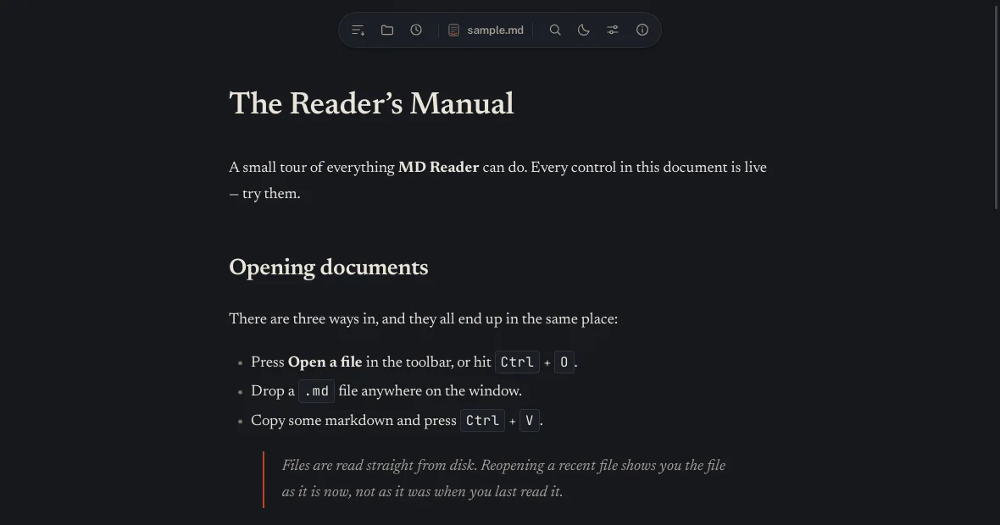
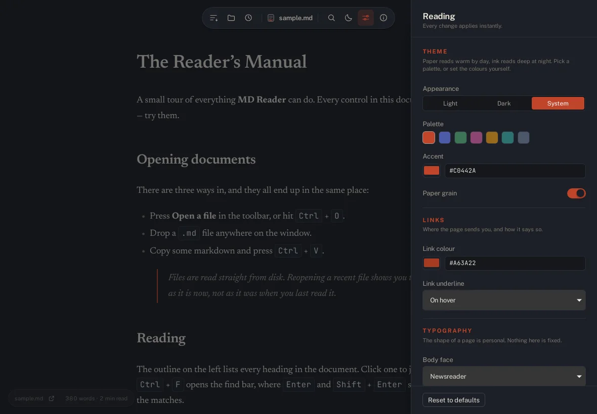

Opens three ways
Press Open a file, drop a .md anywhere on the window, or paste markdown straight in. A file opened from your file manager opens too.
One codebase, built with Tauri v2, for Linux, Windows, macOS, iOS and Android. Opens .md, .markdown, .mdown, .mkd and .mdx files, and never writes to them.

What it does
Opens .md, .markdown, .mdown, .mkd and .mdx files. Searches inside them, lists the headings, and never writes to them.
Press Open a file, drop a .md anywhere on the window, or paste markdown straight in. A file opened from your file manager opens too.
The outline lists every heading, and clicking one scrolls to it. The find bar steps through the matches with Enter and Shift+Enter.
Typeface, size, spacing, column width, paper grain and seven color palettes. Every change applies the moment you make it.
The history keeps the documents you opened, by path, so it can offer them back. The list stays on your device.
The syntax highlighter is fetched only when a document contains code, and the settings drawer is built only when it is opened. The window is painting in about a tenth of a second.
The about window asks GitHub whether a newer release exists and offers to install it. Every update is signed, and the signature is checked before anything is installed.
Paper and ink
A warm printed page for daylight, and the same page at night. Switching wipes across from wherever you clicked.

Everything is a setting
Six groups of settings, each one applied the instant you touch it.
Light, dark, or follow the system. Paper grain is yours to keep or drop.
Seven color schemes, each setting the accent and the link color together.
The color of a link, and whether links are always underlined or only on hover.
Body face, code face, size, line height, letter and word spacing, paragraph spacing, heading scale, alignment.
How wide the column is, and how square the corners of an image are.
The size of code, and nothing else. The highlighting does the rest.

Get it
No Node.js, no runtime, no package manager. You download a file, you run it, you are reading.
| Platform | What you get | How to run it |
|---|---|---|
| Linux | .AppImage, .deb, .rpm |
Run the AppImage, or install the package. The AppImage carries everything it needs and runs from Alpine to Arch. |
| Windows | .msi, -setup.exe |
Run the installer, or the portable executable. |
| macOS | .dmg, .app |
Drag the app to Applications. |
| iOS | .ipa |
Install through Xcode or TestFlight. |
| Android | .apk, .aab |
Install the package. |
Under the hood
The project
The source is open. The reader is small enough to read in an afternoon, and the parts that matter are the parts that are tested.
The whole project, in Rust and TypeScript, with a test suite that runs on Node's own runner. github.com/siamprimetech/mdreader
What stays on your device, and the three things that ever leave it. Read the policy
Every bundled library and typeface, with the license that applies to each. See the list
How documents are sanitised, how updates are signed, and how to report a problem privately. The policy